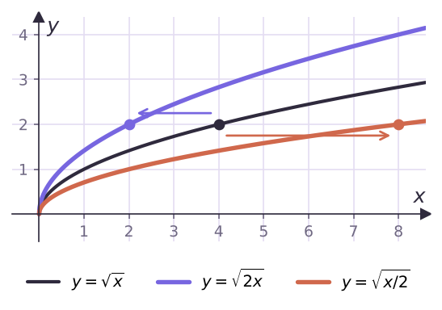
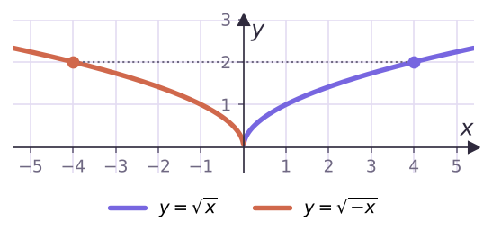
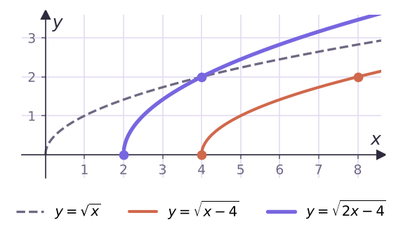
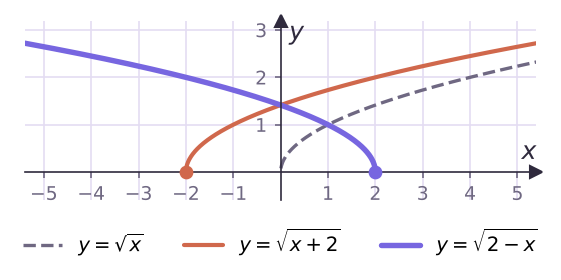
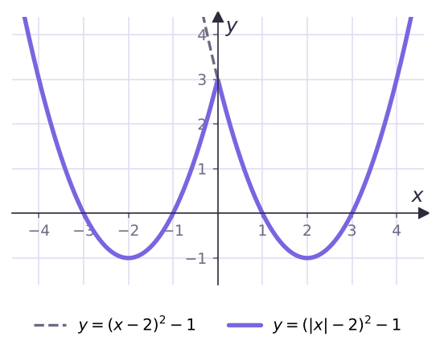
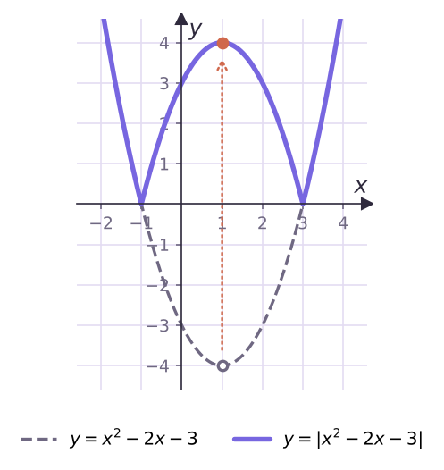
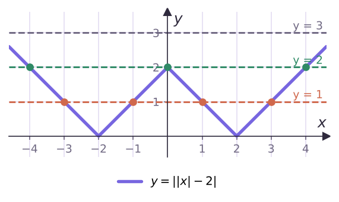

Теория
Что мы уже умеем (9 класс)
Если известен график y = f(x), то без вычислений можно построить:
| Функция | Что делаем с графиком y = f(x) |
|---|---|
| y = f(x) + b | сдвиг вверх на b (при b < 0 — вниз на |b|) |
| y = f(x + a) | сдвиг влево на a (при a < 0 — вправо на |a|) |
| y = kf(x), k > 0 | растяжение от оси абсцисс в k раз (при 0 < k < 1 — сжатие) |
| y = −f(x) | симметрия относительно оси абсцисс |
Заметь закономерность: то, что делают с y (снаружи, после f), меняет график по вертикали и «как написано». То, что делают с x (внутри скобки), меняет график по горизонтали и «наоборот»: f(x + 2) сдвигается влево, а не вправо. Сегодня добавим ещё четыре преобразования.
График y = f(kx), k > 0
Пусть точка (x₀; y₀) лежит на графике y = f(x). Какое x нужно подставить в f(kx), чтобы получить то же значение y₀? Такое, что kx = x₀, то есть x = x₀/k. Значит, точка (x₀/k; y₀) лежит на графике y = f(kx).
График y = f(kx), k > 0, получают из графика y = f(x), заменив каждую точку на точку с той же ординатой и абсциссой, делённой на k. При k > 1 это сжатие в k раз к оси ординат, при 0 < k < 1 — растяжение в 1/k раз от оси ординат.

При k = 2 график сжимается (абсциссы делятся на 2), а не растягивается. Проверка на одной точке спасает: √x = 2 при x = 4, а √(2x) = 2 при x = 2 — точка приблизилась к оси Oy.
График y = f(−x)
Если (x₀; y₀) лежит на графике y = f(x), то (−x₀; y₀) лежит на графике y = f(−x): ведь f(−(−x₀)) = f(x₀) = y₀.
График y = f(−x) симметричен графику y = f(x) относительно оси ординат.

При k < 0 график y = f(kx) строят в два шага: f(kx) = f(−|k|x) — сжатие/растяжение в |k| раз и симметрия относительно Oy.
Цепочки преобразований
Построй график функции y = √(2x − 4).
Схема 1. √x → √(x − 4) (вправо на 4) → √(2x − 4) (вместо x подставили 2x: сжатие в 2 раза к оси Oy).

Начальная точка (4; 0) после сжатия переходит в (2; 0), точка (8; 2) — в (4; 2).
Схема 2. Запишем y = √(2(x − 2)): √x → √(2x) (сжатие) → √(2(x − 2)) (вправо на 2, а не на 4!). Результат тот же.
Если сначала сжимать, то сдвигать нужно на 2, а не на 4: 2x − 4 = 2(x − 2). Ошибка — сжать, а потом сдвинуть на 4. Чтобы не путаться, проверяй, где у получившегося графика «начало»: 2x − 4 = 0 при x = 2.
Построй график функции y = √(2 − x).
√x → √(x + 2) (влево на 2) → √(−x + 2) (вместо x подставили −x: симметрия относительно Oy).

Проверка: область определения 2 − x ≥ 0, то есть x ≤ 2, — график «начинается» в точке (2; 0) и уходит влево. Верно.
График y = f(|x|)
По определению модуля f(|x|) = f(x) при x ≥ 0 и f(−x) при x < 0. Кроме того, функция f(|x|) чётная. Отсюда правило:
- оставляем часть графика y = f(x) при x ≥ 0 (правую), а левую стираем;
- отражаем правую часть симметрично относительно оси Oy.

График y = |f(x)|
|f(x)| = f(x), где f(x) ≥ 0, и −f(x), где f(x) < 0. Отсюда правило:
- часть графика y = f(x), лежащую не ниже оси Ox, оставляем;
- часть, лежащую ниже оси Ox, отражаем симметрично относительно оси Ox (вверх).

Не перепутай: у f(|x|) модуль внутри — отражают правую часть влево, у |f(x)| модуль снаружи — отражают нижнюю часть вверх. График |f(x)| не имеет точек ниже оси Ox; график f(|x|) всегда симметричен относительно Oy.
Разбираем вместе: уравнения с параметром
Графики помогают ответить на вопрос «сколько корней у уравнения f(x) = a?». Число корней — это число точек пересечения графика y = f(x) с горизонтальной прямой y = a. Двигаем прямую снизу вверх и считаем точки.
Сколько корней имеет уравнение ||x| − 2| = a в зависимости от a?
Строим: y = x − 2 → y = |x| − 2 (правую часть отражаем влево) → y = ||x| − 2| (нижние части отражаем вверх). Получилась «буква W».

- a < 0 — прямая ниже графика: корней нет;
- a = 0 — касается «дна» в точках ±2: 2 корня;
- 0 < a < 2 — 4 корня (при a = 1 это ±1 и ±3);
- a = 2 — проходит через вершину (0; 2): 3 корня (0 и ±4);
- a > 2 — 2 корня.
Задачи урока
Реши в тетради. Ответы разберём на занятии.
Из учебника
- № 6.1, 6.2 — Графики вида y = f(kx) и y = f(−x).
- № 6.5, 6.6 — Цепочки преобразований с корнем и квадратом.
- № 6.8, 6.9 — Графики с модулем: f(|x|) и |f(x)|.
- № 6.11 — Число корней уравнения с параметром по графику.
Тест к уроку
Домашнее задание
№ 6.2, 6.6, 6.9 (1, 2), 6.12 (1) из учебника письменно. Для каждого графика выписать схему преобразований стрелками, как в примерах урока.